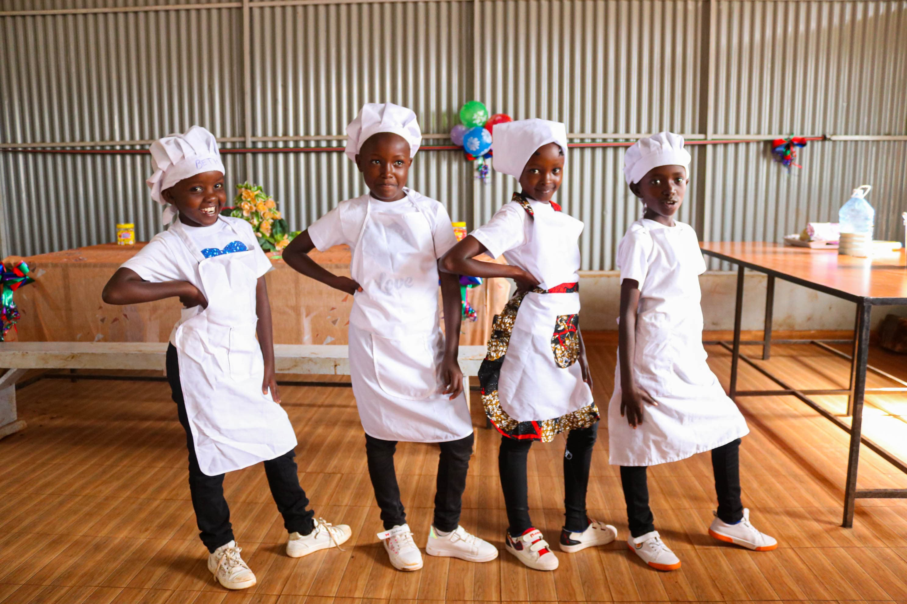
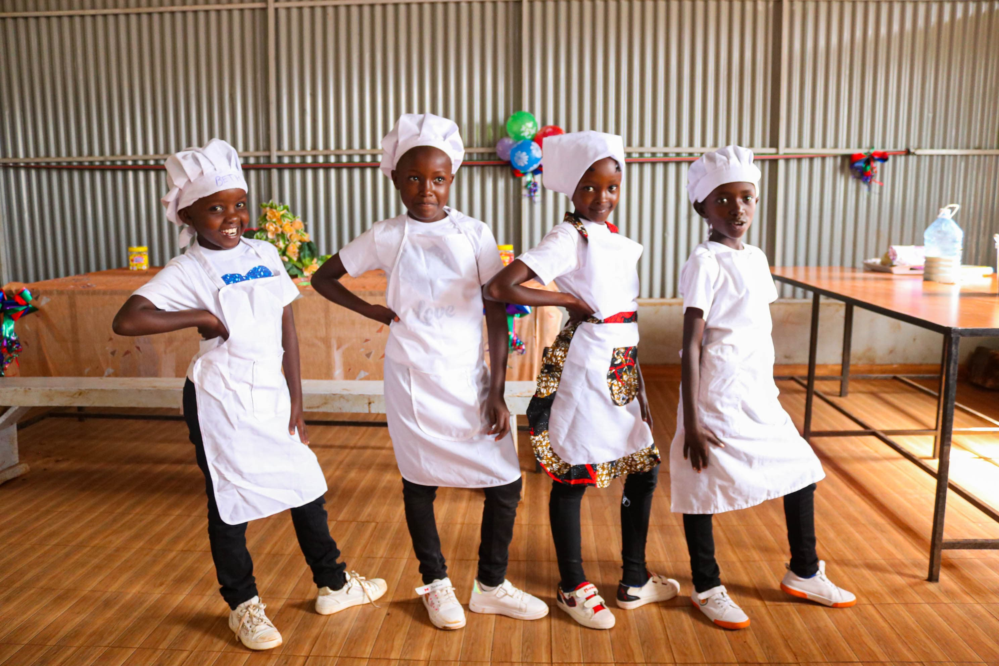
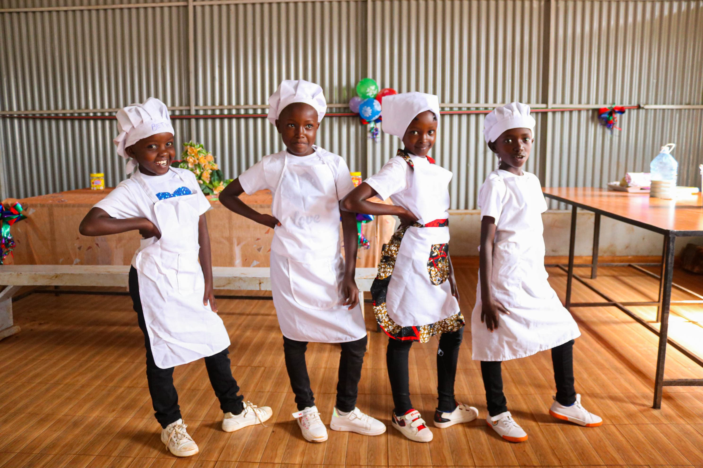

Gallery
 

"Empowering Minds, Changing Lives"
Located in the heart of Thogoto, Kikuyu, in Kiambu County, Thogoto Model Comprehensive School is one of the best schools in the area. We offer the CBC curriculum, including Pre-primary, Primary, and Junior School, complemented by a wide range of extra-curricular activities.
Our admissions process is straightforward and inclusive. We welcome students from all backgrounds to join our diverse and dynamic learning community. Contact us to learn more about our admission requirements and how to apply.
| Date | Event | Description |
|---|---|---|
| 6th January, 2025 | Opening (Term I) | Start of the first term. |
| 26th February, 2025 - 2nd March, 2025 | Half Term (Term I) | Five-day mid-term break. |
| 7th April, 2025 - 25th April, 2025 | April Holiday | Three-week holiday after Term I. |
| 28th April, 2025 | Opening (Term II) | Start of the second term. |
| 25th June, 2025 - 29th June, 2025 | Half Term (Term II) | Five-day mid-term break. |
| 4th August, 2025 - 22nd August, 2025 | August Holiday | Three-week holiday after Term II. |
| 25th August, 2025 | Opening (Term III) | Start of the third term. |
| 27th October, 2025 - 30th October, 2025 | KPSEA | Four days of assessment for learners. |
| 27th October, 2025 - 31st October, 2025 | KILEA | Five days of examinations. |
| 27th October, 2025 - 6th November, 2025 | KJSEA & KPLEA | Nine days of exams for Junior and Primary School learners. |
| 27th October, 2025 - 2nd January, 2026 | December Holiday | Ten-week holiday after Term III. |

Address: Thogoto, Kikuyu, Kiambu County
Postal Address: P.O Box 193-00902 Kikuyu.
Email: thogotomodeloffice@gmail.com
Phone: +254 0000000